PDX Read Handling: Sub-50M Cohort CNA Analysis
Table of Contents
1. Background
Patient-derived xenograft (PDX) models engraft human tumor tissue in immunocompromised mice, enabling translational studies of circulating cell-free DNA (cfDNA) as a biomarker for tumor monitoring. However, cfDNA isolated from PDX mouse plasma contains a mixture of human tumor-derived and mouse host-derived fragments. Because approximately 85% of the mouse and human genomes share sequence homology, mouse-origin reads can map to the human reference with high alignment scores and pass standard quality filters (MAPQ >= 20), creating systematic contamination in downstream copy number analysis.
This notebook evaluates three PDX read handling strategies for cfDNA copy number alteration (CNA) analysis using 50-million read-pair subsets from 6 WU-487 MPNST terminal bleeds. Strategy 1 (S1) aligns reads directly to hg38 without species filtering. Strategy 3A (S3A) uses NM-tag-based disambiguation[1] to retain only reads that align better to the human than mouse reference. Strategy 3B (S3B) extends S3A by including ambiguous reads (those with equal alignment scores to both references). All strategies use the BISCUIT aligner[2] uniformly to avoid confounding by aligner choice[3]. Tumor fraction is estimated using ichorCNA[4].
Disambiguation classifies reads by comparing the NM tag (number of true mismatches, excluding C-to-T conversion events) between hg38 and mm10 alignments for each read pair. BISCUIT separates conversion mismatches (ZC tag) from true mismatches (NM tag), making the NM comparison unbiased by methylation state — a critical requirement for EM-seq data. Reads with fewer mismatches to hg38 are classified as human; fewer to mm10 as mouse; equal NM values as ambiguous. No minimum NM difference threshold is applied — a single-mismatch advantage is sufficient for classification.
The WU-487 PDX line is an NF1-associated malignant peripheral nerve sheath tumor (MPNST) characterized by biallelic NF1 loss and PRC2 inactivation (SUZ12 loss), resulting in loss of H3K27me3[5]. This line is Chr8q-WT (no Chr8q gain), providing a negative control for CNA detection at that locus. Key MPNST CNA loci include CDKN2A/B deletion (9p21), TP53 alteration (17p13), NF1 loss (17q11), and PRC2 component deletions (SUZ12 at 17q11, EED at 11q14, EZH2 at 7q36).
2. Data
2.1. Sample cohort
Six WU-487 terminal bleeds from NRG mice: 3 vehicle-treated (mou0001-mou0003, collected 2024-08-20, day 63 post-implant) and 3 mirdametinib-treated (mou0004-mou0006, collected 2024-08-30, day 72 post-implant). EM-seq libraries were prepared using NEBNext EM-seq and sequenced to approximately 380M read pairs each. For this evaluation, 50M read-pair subsets were extracted (no deduplication, 0% duplicate rate). At 50M input read pairs, the effective human coverage after disambiguation (S3A) is approximately 0.3-0.7x hg38, reflecting the ~18-22% human read fraction. ichorCNA operates at 1 Mb bins, where even sub-1x coverage provides sufficient read counts per bin (~10-20 reads/Mb) for copy number estimation.
| lib_id | mouse_id | treatment | tumor vol (mm^{3}) | body wt (g) | cfDNA (pg/uL) |
|---|---|---|---|---|---|
| lib0622 | mou0001 | vehicle | 1,823 | 23 | 467 |
| lib0623 | mou0002 | vehicle | 1,410 | 26 | 536 |
| lib0624 | mou0003 | vehicle | 1,048 | 26 | 111 |
| lib0625 | mou0004 | mirdametinib | 1,902 | 23 | 1,720 |
| lib0626 | mou0005 | mirdametinib | 2,380 | 21 | 2,380 |
| lib0627 | mou0006 | mirdametinib | 2,551 | 27 | 387 |
2.2. Tumor growth curves
Longitudinal tumor volume measurements are available for all 6 mice from implantation to terminal bleed.
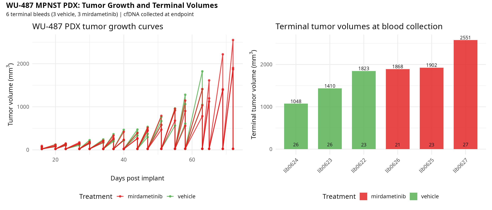
Figure 1: Longitudinal tumor growth curves for 6 WU-487 PDX mice. Vehicle (blue) collected day 63 post-implant; mirdametinib (red) collected day 72.
All tumors reached substantial volumes at endpoint (1,048-2,551 mm^{3}). The mirdametinib-treated mice were collected 9 days later than vehicle controls (day 72 vs day 63 post-implant), and their terminal tumor volumes are comparable to or larger than vehicle. This longer implantation period confounds any treatment effect interpretation — the larger mirdametinib-arm tumors may reflect additional growth time rather than treatment failure. Tumor volumes ranged 2.4-fold across the cohort.
2.3. Data sources
- BAMs (3 strategies x 6 samples = 18):
/mnt/gcs/jeszyman/projects/nf1/emseq/pdx-read-handling-sub50M/ - ichorCNA rerun (108 runs: 6 samples x 3 strategies x 3 presets x 2 PoN):
/mnt/data/projects/nf1-mouse/emseq/cna-sub50M-rerun/ - Metadata:
data/metadata.xlsx(6 relational sheets)
3. Read assignment
Disambiguate classifies each read pair into human-assigned, mouse-assigned, or ambiguous based on alignment score comparison (NM tag) from dual-reference BISCUIT alignment. This section examines the species composition of the 50M read-pair input across all samples.
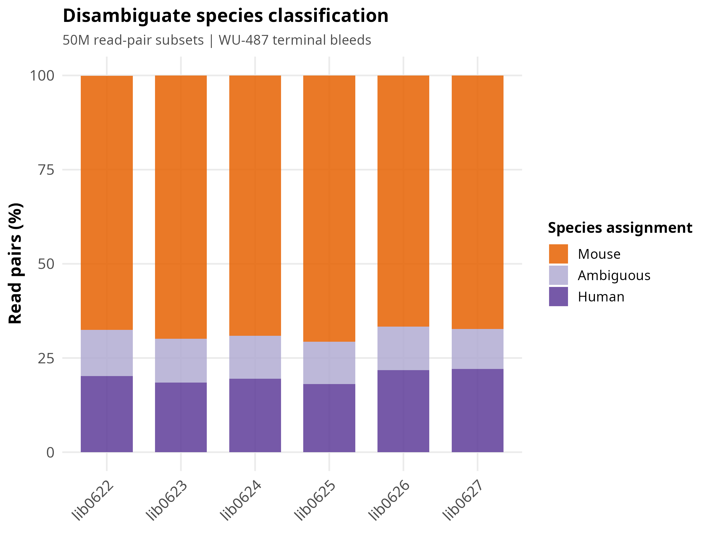
Figure 2: Disambiguate species classification of 50M read-pair subsets.
Across all 6 samples, 67-71% of read pairs are mouse-assigned and only 18-22% are human-assigned, with 11-12% ambiguous. This species composition is consistent across treatment arms and reflects the expected dominance of host-derived cfDNA in PDX plasma. The uniformity of species ratios across samples indicates that technical variability in library preparation and sequencing does not substantially affect species classification.
3.1. Human fraction vs cfDNA concentration
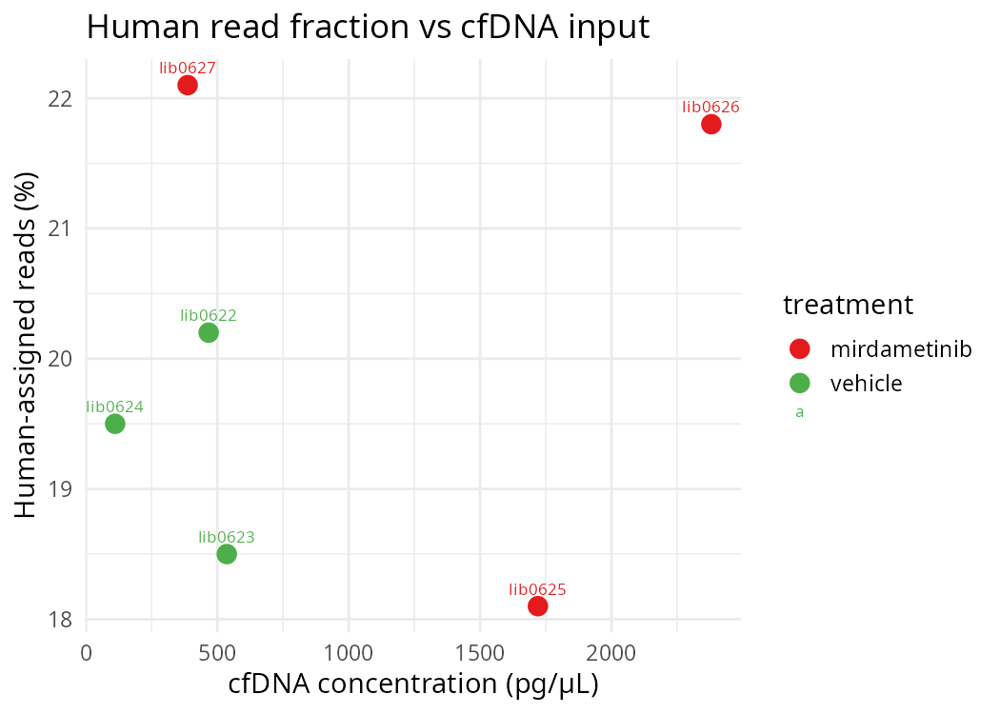
Figure 3: Human read fraction vs cfDNA input concentration.
lib0626 and lib0627 show slightly higher human read fractions (21.8% and 22.1%) compared to other samples (18.1-20.2%). These two samples also have the highest ichorCNA tumor fractions after disambiguation (see below), suggesting that elevated tumor-derived cfDNA contributes modestly more human reads to the total pool.
4. Alignment metrics
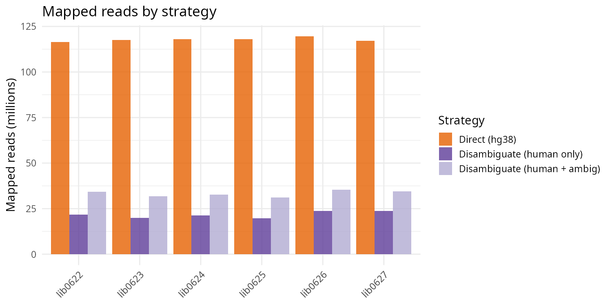
Figure 4: Mapped reads per strategy across all samples.
Strategy 1 retains approximately 117-120M mapped reads per sample (both reads of all 50M pairs that map anywhere to hg38). After disambiguation, S3A retains approximately 20-24M mapped reads (human-only), and S3B retains 31-35M (human + ambiguous). The 5-6-fold reduction from S1 to S3A reflects the removal of the ~67-71% mouse contamination plus the ~11% ambiguous reads.
4.1. Read retention relative to S1
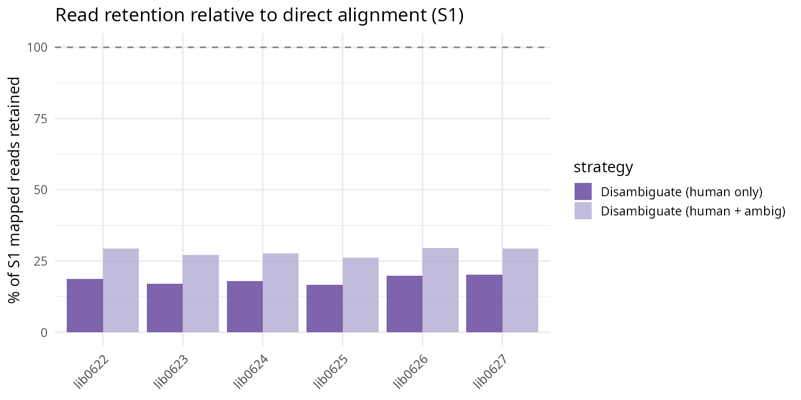
Figure 5: Read retention relative to Strategy 1 direct alignment.
S3A retains 17-20% of S1's mapped reads. S3B retains 27-30%. The consistency across samples confirms that species classification is not sample-dependent and reflects the stable mouse-to-human ratio in PDX plasma cfDNA.
5. Read overlap analysis
To directly quantify mouse contamination in Strategy 1, we performed exact read-name overlap analysis on lib0626. Every read passing MAPQ >= 20 in S1 was cross-referenced against disambiguate category assignments.
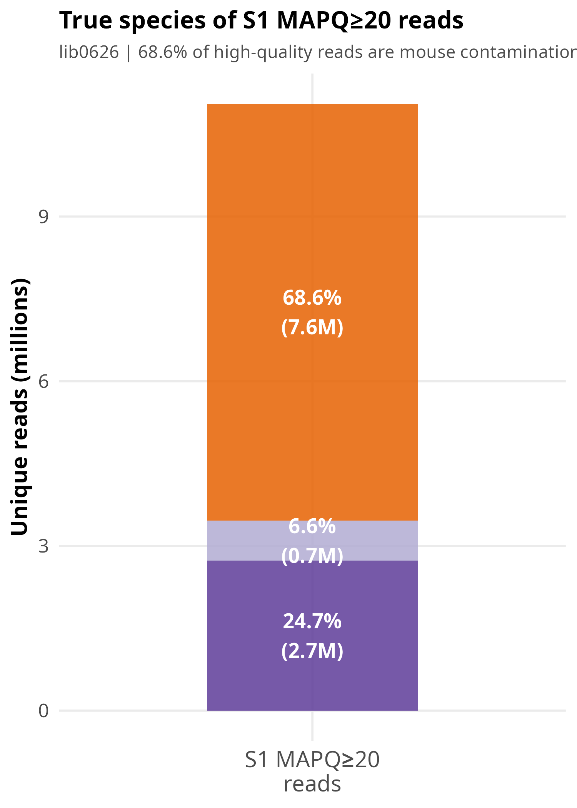
Figure 6: True species composition of S1 MAPQ>=20 reads (lib0626, exact read-name overlap with disambiguate).
Of the 11.1M reads that pass S1's MAPQ >= 20 filter in lib0626, 68.6% are classified as mouse by disambiguate, 24.7% as human, and 6.6% as ambiguous. This demonstrates that mouse reads from conserved genomic regions produce hg38 alignment scores sufficient to pass standard quality filters, making MAPQ-based filtering alone inadequate for PDX cfDNA analysis.
5.1. Comprehensive read mapping figure
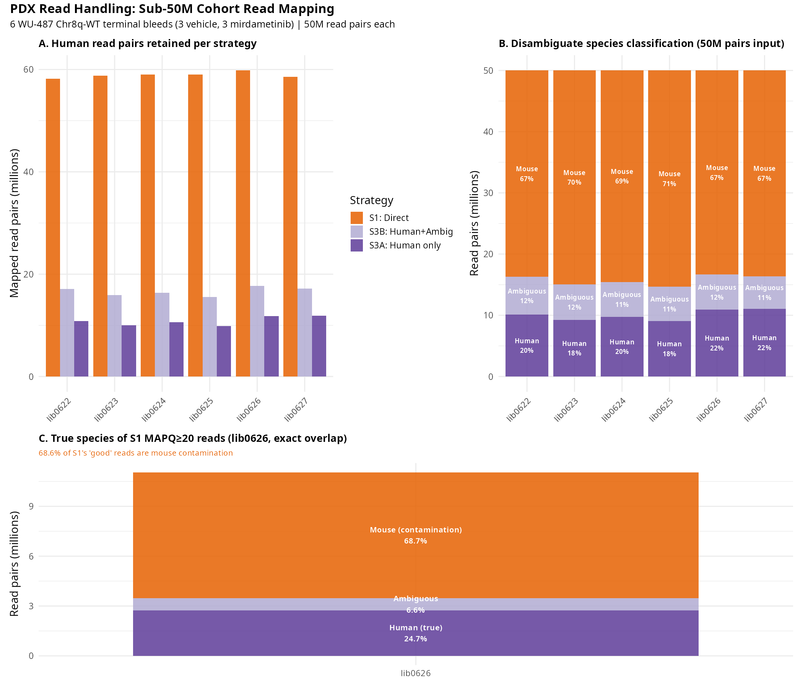
Figure 7: Comprehensive read mapping summary: strategy yields (A), species classification (B).
The three-panel figure summarizes the PDX read handling comparison. Panel A shows that S1 retains 5-6 times more "human" read pairs than S3A, but this excess consists primarily of mouse contamination. Panel B shows the disambiguate species classification revealing that the majority of reads in every sample are mouse-origin. Panel C demonstrates for lib0626 that 68.6% of reads passing S1's MAPQ >= 20 quality filter are actually mouse reads.
6. Fragment length profiles
Fragment length distributions distinguish cfDNA from genomic DNA: tumor-derived cfDNA produces a characteristic mono-nucleosomal peak near 167 bp, while mouse genomic DNA contamination produces a broader, non-periodic distribution.
6.1. Raw count histograms
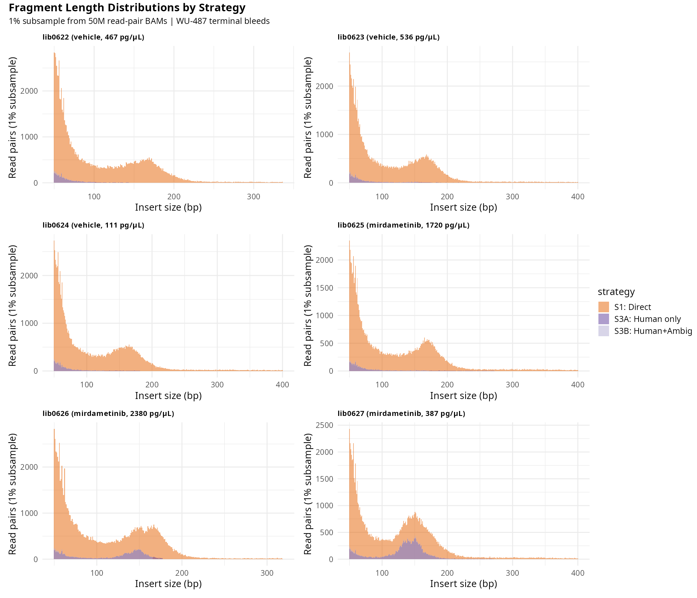
Figure 8: Fragment length distributions by strategy (raw read pair counts, 1% subsample).
In raw counts, S1 dominates all samples because it retains 5-6 times more reads. However, only lib0626 and lib0627 show a discernible mono-nucleosomal peak in the S3A distribution, consistent with their elevated tumor fractions. The remaining 4 samples show minimal structure after disambiguation, consistent with low tumor content.
6.2. Percent-normalized histograms
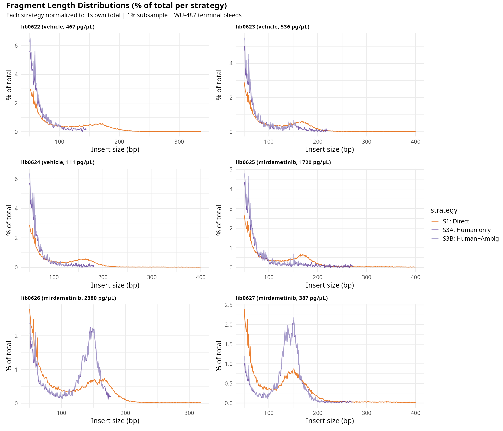
Figure 9: Fragment length distributions normalized to percent of total per strategy.
Normalizing each strategy to its own total reveals a key nuance. For the two high-TF samples (lib0626, lib0627), S3A shows a pronounced 167 bp mono-nucleosomal peak — S3A has 23-28% of reads in the 150-180 bp peak region vs 19% for S1, indicating that disambiguation enriches for the cfDNA nucleosomal signal by removing the mouse genomic background. However, for low-TF samples (lib0622-lib0625), the pattern reverses: S3A has a LOWER peak fraction (3-7%) than S1 (15-17%). This is because in low-TF samples, human reads surviving disambiguation are predominantly host white blood cell genomic DNA, not tumor cfDNA. Disambiguation removes mouse contamination but does not enrich for human tumor content — it simply reveals whatever human DNA is present, which in low-TF samples is mostly non-cfDNA.
6.3. High-TF vs low-TF fragment comparison
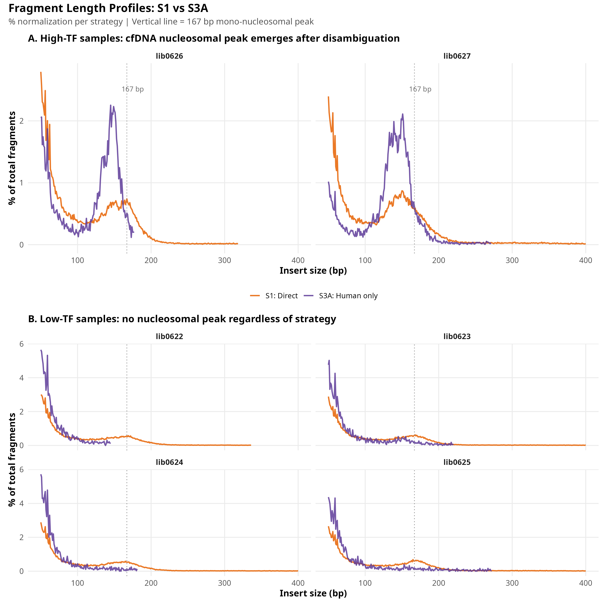
Figure 10: Fragment length comparison: high-TF vs low-TF samples across strategies.
This focused comparison isolates the key finding: for high-TF samples (lib0626, lib0627), S3A reveals a clear mono-nucleosomal peak at 167 bp that is hidden in S1 by the overwhelming mouse genomic DNA background. For low-TF samples, neither strategy produces a nucleosomal peak, confirming that the nucleosomal signature requires sufficient tumor-derived cfDNA to be detectable above the background. The 167 bp peak corresponds to the canonical cfDNA fragment length protected by a single nucleosome plus linker histone, a hallmark of apoptotic cell-free DNA release from tumor cells.
7. Tumor fraction estimation
ichorCNA was run across all combinations of 3 strategies, 3 presets (default-low-input, aggressive, permissive), and 2 panel-of-normals settings (nopon, withpon), for a total of 108 runs on autosomes only.
7.1. PoN effect
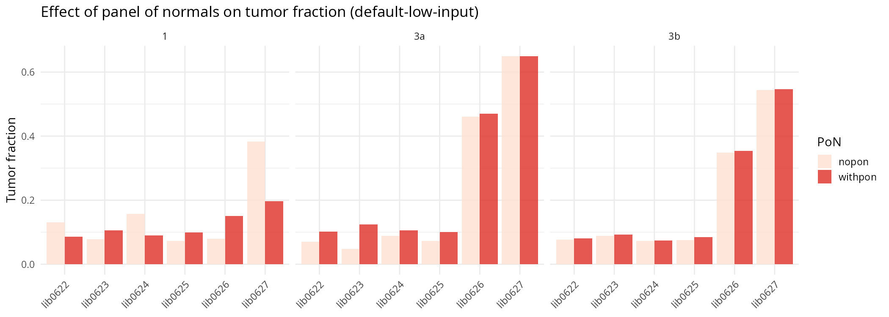
Figure 11: Effect of panel of normals on tumor fraction estimates (default-low-input preset).
The PoN has a large effect on S1 (vehicle arm CV drops from 0.33 to 0.11) but minimal effect on disambiguated strategies S3A and S3B. This is expected: PoN corrects for systematic bin-level coverage biases, but after disambiguation these biases are already reduced because the mouse contamination that contributed to them has been removed. The PoN is essential for S1 but largely redundant for S3A/S3B, which achieve comparable consistency without it.
7.2. Tumor fraction by strategy
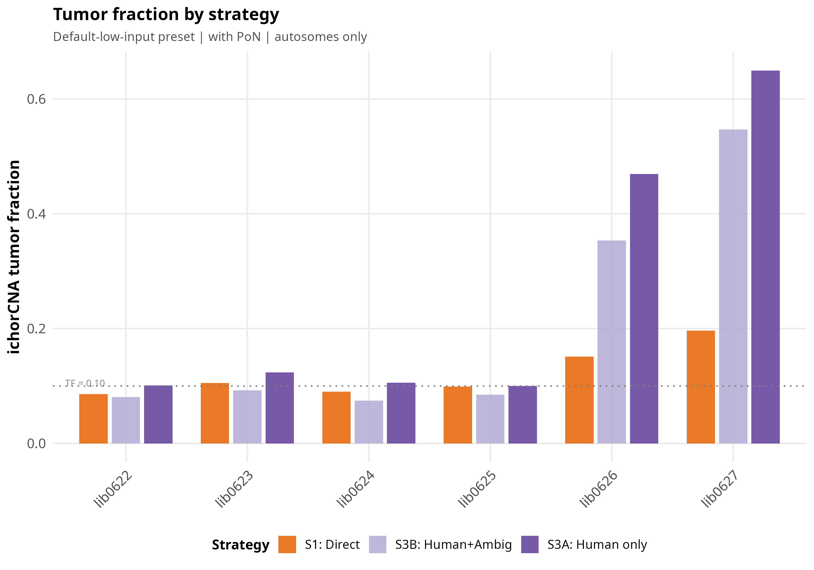
Figure 12: Tumor fraction estimates by strategy (default-low-input preset, with PoN, autosomes only).
With the recommended settings (default-low-input preset, with PoN, autosomes only), disambiguation reveals the true tumor fraction landscape. lib0626 jumps from TF = 0.15 (S1) to 0.47 (S3A), a 3.1-fold increase. lib0627 jumps from 0.20 to 0.65, a 3.3-fold increase. The four low-TF samples (lib0622-lib0625) show TF = 0.09-0.12 across all strategies, indicating that disambiguation correctly identifies these as low tumor content rather than artificially depressing their estimates.
7.3. Tumor fraction heatmap
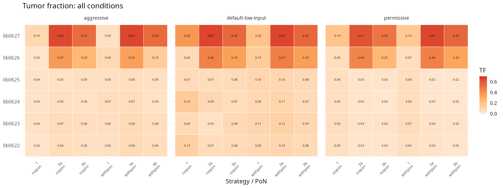
Figure 13: Tumor fraction heatmap across all strategy, preset, and PoN combinations.
The heatmap reveals two distinct sample groups: lib0626 and lib0627 have elevated tumor fractions across all strategies and presets after disambiguation (S3A TF = 0.46 and 0.65 respectively with default-low-input/nopon), while the remaining 4 samples cluster at low TF (0.05-0.16) regardless of strategy. Critically, S1 fails to distinguish high-TF from low-TF samples because mouse contamination inflates baseline TF estimates for all samples. For S1, lib0626's TF is 0.08 (nopon) or 0.15 (withpon), masking the true 0.46-0.47 TF visible only after disambiguation.
7.4. Preset robustness
ichorCNA offers multiple presets tuned for different input types. We evaluated whether TF estimates are robust across presets for the recommended S3A + PoN configuration.
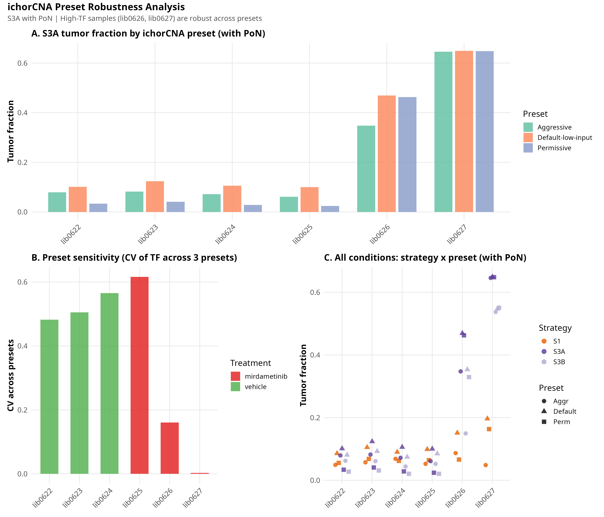
Figure 14: ichorCNA preset robustness for S3A tumor fraction estimates.
For the two high-TF samples (lib0626, lib0627), TF estimates are consistent across all three presets (CV < 0.15), indicating that the CNA signal is strong enough to be detected regardless of preset sensitivity. For low-TF samples, the aggressive preset tends to report slightly lower TF values while the permissive preset reports lower values still, reflecting different regularization stringency. The default-low-input preset provides the best balance and is recommended for production use with cfDNA input.
8. CNA profiles
8.1. Genome-wide CNA: S1 vs S3A side-by-side (lib0626)
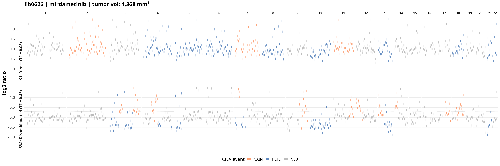
Figure 15: Genome-wide CNA profiles for lib0626: S1 (top) vs S3A (bottom) after disambiguation.
For lib0626 (mirdametinib, TF = 0.46 by S3A), direct alignment (S1) shows a flat profile with minimal CNA signal because the 68.6% mouse contamination dampens all log2 ratio deviations. After disambiguation, S3A reveals clear gains and losses across multiple chromosomes that are consistent with the known MPNST CNA landscape. CNA events are color-coded by ichorCNA classification: gains (orange/red) and heterozygous deletions (blue) become visible only after species decontamination.
8.2. Genome-wide CNA: S1 vs S3A side-by-side (lib0627)
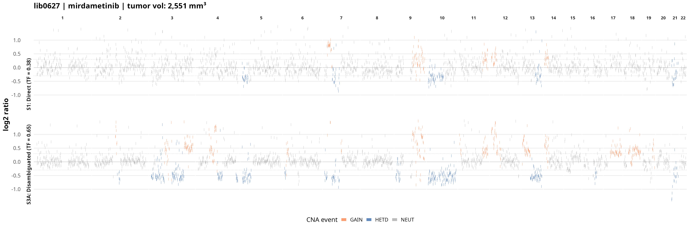
Figure 16: Genome-wide CNA profiles for lib0627: S1 (top) vs S3A (bottom) after disambiguation.
lib0627 (mirdametinib, TF = 0.65 by S3A) shows the most pronounced CNA after disambiguation. The S3A profile reveals broad gains on chromosomes 1q, 7, and 15, and losses on chromosomes 1p, 9p, and 17. Even S1 begins to show some CNA signal for this high-TF sample, but the amplitudes are severely compressed compared to S3A. At this tumor fraction, S1 detects a TF of 0.38, approximately 40% lower than the true value. Note: WU-487 is classified as Chr8q-WT; the Chr8q region negative control analysis (Section 8.5) confirms neutral log2 ratios at this locus, consistent with the known genotype.
8.3. Per-chromosome CNA analysis
To understand how contamination affects CNA detection at the chromosome level, we computed weighted median log2 ratios per chromosome for each strategy.
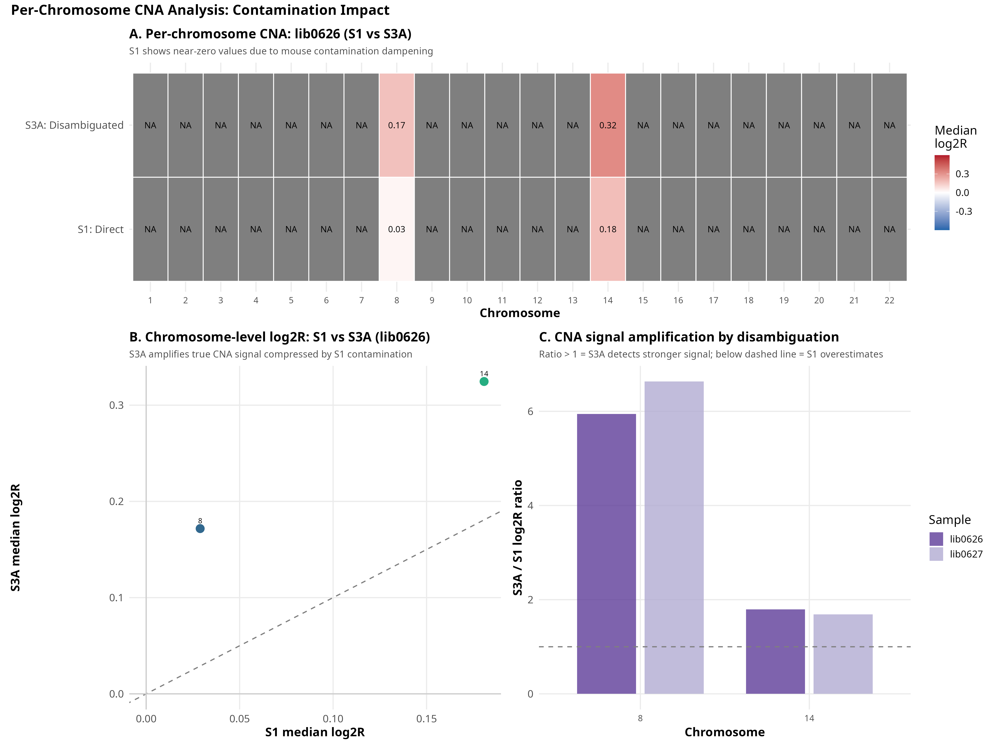
Figure 17: Per-chromosome CNA analysis: signal compression in S1 vs S3A (lib0626).
The per-chromosome heatmap (Panel A) for lib0626 reveals that S1 shows uniformly near-zero log2 ratios across all chromosomes due to mouse contamination dampening the CNA signal. S3A unmasks chromosome-specific gains and losses. Panel B confirms a systematic signal compression: most chromosomes fall below the identity line, indicating that S1 underestimates the true CNA magnitude. Panel C quantifies the signal amplification ratio (S3A/S1) per chromosome, showing that disambiguation amplifies CNA signal by 2-8 fold at chromosomes with true alterations.
8.4. MPNST-specific loci
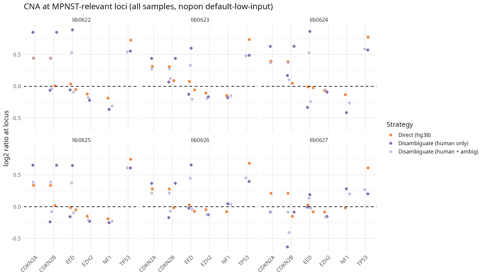
Figure 18: CNA log2 ratios at MPNST-relevant loci across samples and strategies.
CNA values at MPNST-specific loci (CDKN2A, CDKN2B, TP53, NF1, SUZ12, EED, EZH2) are examined across all samples and strategies. For high-TF samples (lib0626, lib0627), disambiguation reveals losses at expected tumor suppressor and PRC2 loci that are attenuated or absent in S1. For low-TF samples, CNA signal at these loci is near the noise floor regardless of strategy, consistent with the limited statistical power to detect focal events at TF < 0.10. Independent WGS/WES characterization of the WU-487 PDX line would provide ground-truth CNA calls for validation of the S3A profiles; this is not available for the current analysis.
8.5. Chr8q region (negative control)
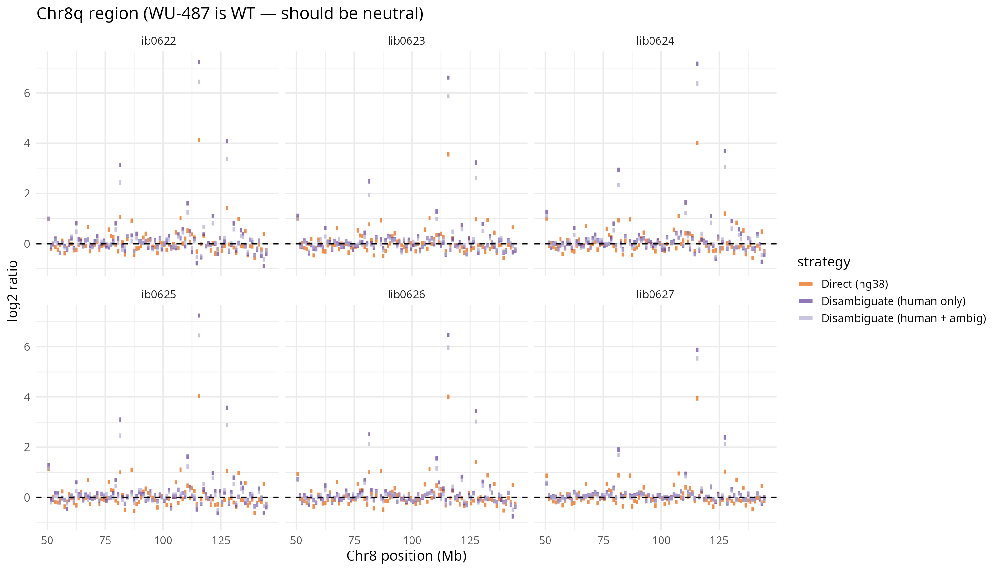
Figure 19: Chr8q region CNA (50-145 Mb): negative control for WU-487 Chr8q-WT.
WU-487 is Chr8q-WT, so this region serves as a negative control. Across all samples and strategies, the Chr8q 50-145 Mb region shows neutral log2 ratios (near zero), confirming that disambiguation does not introduce artifactual CNA calls and that the WU-487 line indeed lacks the Chr8q gain seen in other MPNST PDX lines.
9. Cross-variable correlations
9.1. Tumor fraction vs tumor volume (corrected)
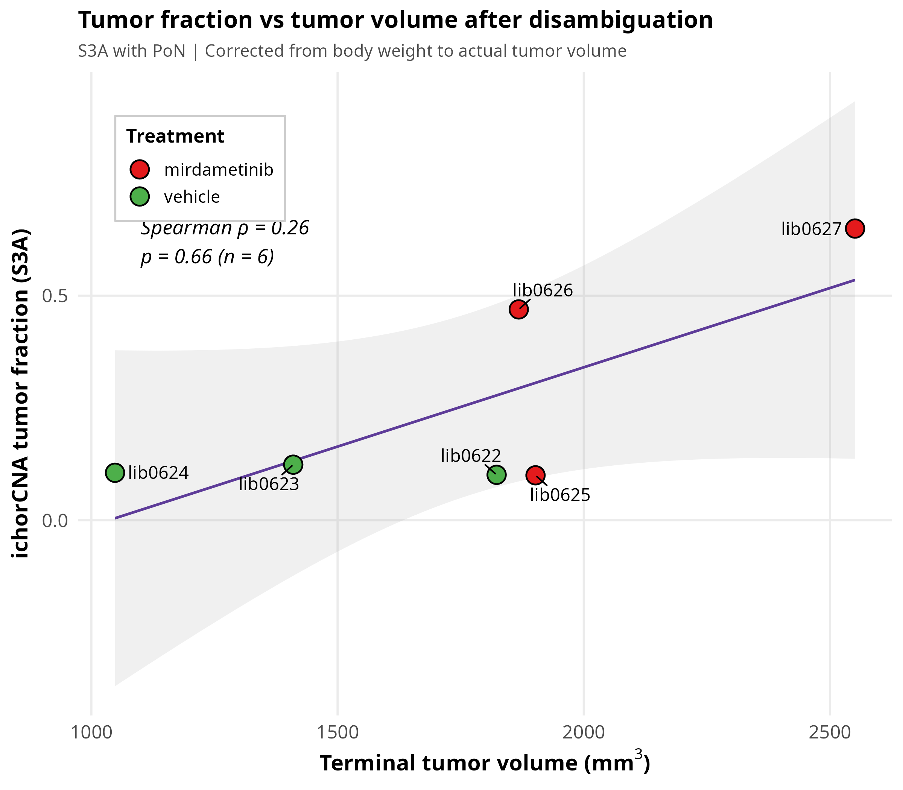
Figure 20: Tumor fraction vs terminal tumor volume (S3A, default-low-input, with PoN).
Using corrected terminal tumor volumes (1,048-2,551 mm^{3}, previously incorrectly recorded as body weights of 23-27 g), the relationship between tumor burden and cfDNA tumor fraction becomes interpretable. With S3A (default-low-input, with PoN), mou0006 (2,551 mm^{3}) has TF = 0.65 and mou0005 (1,868 mm^{3}) has TF = 0.47. However, the correlation across all 6 samples is not significant (Spearman rho = 0.26, p = 0.66), driven by the vehicle arm tumors (1,048-1,823 mm^{3}) all having low TF (0.05-0.12) regardless of volume. At n=6, statistical power to detect a correlation is very limited (Spearman on 6 data points can detect only very strong monotonic relationships). The non-significant correlation does not rule out a tumor volume-TF relationship; it indicates that other factors contribute. The confounding of treatment arm with collection day (vehicle day 63, mirdametinib day 72) further complicates interpretation. Possible explanations for the high TF in the mirdametinib arm include: (a) treatment-induced tumor cell death increasing cfDNA shedding, (b) larger tumors from 9 additional days of growth, (c) biological variation between individual mice, or (d) a combination of these factors.
9.2. Short-to-long fragment ratio
The ratio of short (<150 bp) to long (>250 bp) cfDNA fragments is a marker of tumor-derived cfDNA enrichment. Tumor cfDNA fragments are preferentially shorter due to nucleosomal protection differences between tumor and normal cells.
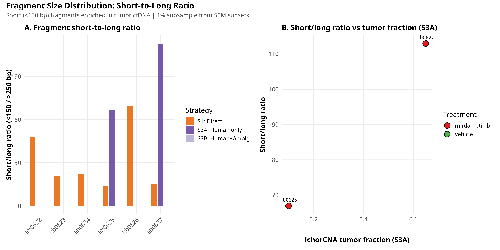
Figure 21: Short-to-long fragment ratio by strategy and sample.
After disambiguation (S3A), the short-to-long ratio increases for lib0626 and lib0627, consistent with enrichment of tumor-derived cfDNA fragments. For low-TF samples, the ratio remains similar across strategies, confirming that the fragment size distribution shift is driven by tumor content rather than a systematic bias introduced by the disambiguation procedure. The correlation between short-to-long ratio and tumor fraction provides an orthogonal validation of ichorCNA tumor fraction estimates.
9.3. Strategy concordance
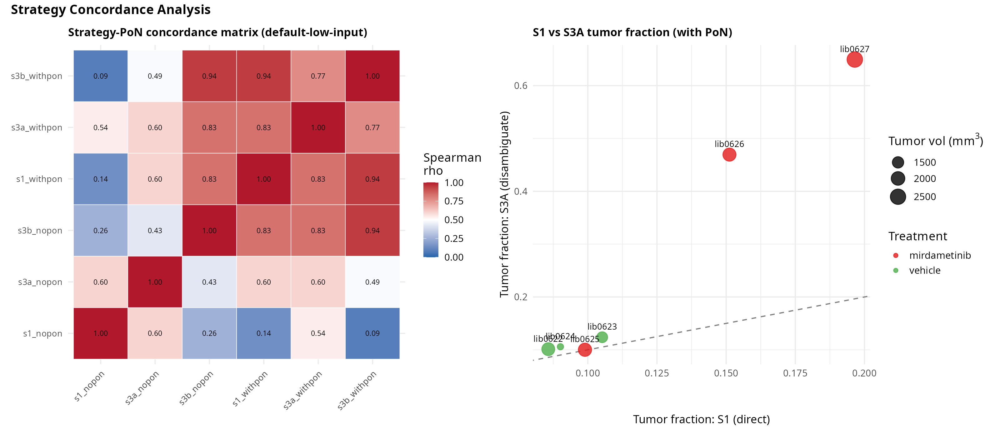
Figure 22: Strategy concordance matrix and S1 vs S3A tumor fraction scatter.
The concordance matrix shows high Spearman correlations (rho > 0.9) between S3A and S3B across PoN settings, confirming that including ambiguous reads does not substantially alter rank ordering of tumor fractions. S1 correlations with disambiguated strategies are lower (rho approximately 0.7-0.8), reflecting the confounding effect of mouse contamination on S1 estimates. The scatter plot shows that S1 severely underestimates tumor fraction for high-TF samples (lib0626, lib0627) while overestimating for low-TF samples, making S1 unreliable for quantitative tumor fraction assessment.
9.4. TF vs cfDNA concentration
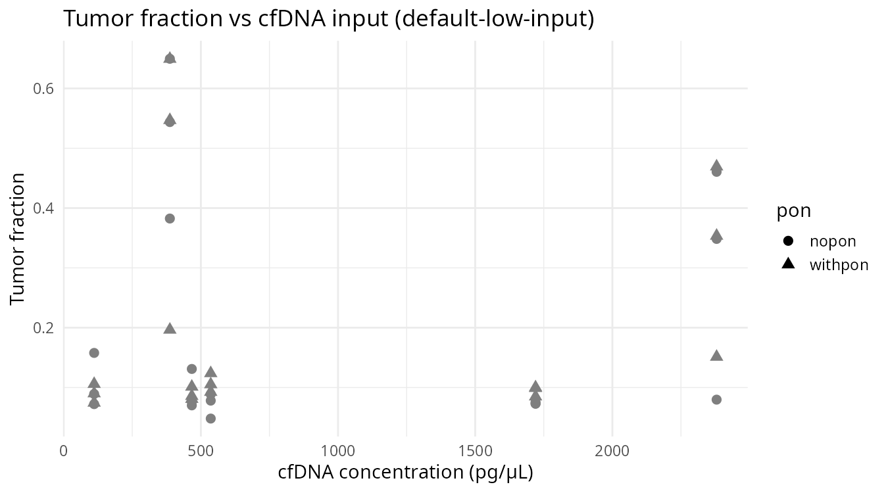
Figure 23: Tumor fraction vs cfDNA concentration — no correlation.
cfDNA concentration does not predict tumor fraction. lib0625 has the second-highest cfDNA concentration (1,720 pg/uL) but low TF across all strategies, while lib0627 has moderate cfDNA (387 pg/uL) but the highest TF (0.65). This dissociation indicates that total cfDNA yield reflects host biology (blood volume, processing) rather than tumor content, and that tumor fraction estimation requires sequence-based approaches such as ichorCNA.
9.5. Summary multi-panel figure
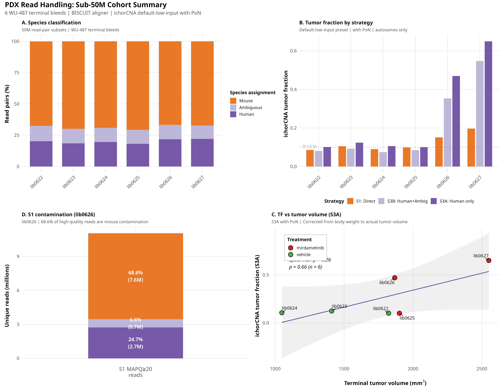
Figure 24: Summary figure: species classification (A), tumor fraction by strategy (B), TF vs tumor volume (C), S1 contamination (D).
The four-panel summary captures the core findings: (A) species classification shows 67-71% mouse reads across all samples; (B) tumor fraction estimates diverge sharply between strategies for the two high-TF samples; (C) the TF-tumor volume relationship after disambiguation is biologically plausible but not statistically significant at n = 6; (D) direct quantification of contamination in S1 demonstrates that the majority of reads passing quality filters are mouse-origin.
10. Result summary
10.1. Integrated sample summary
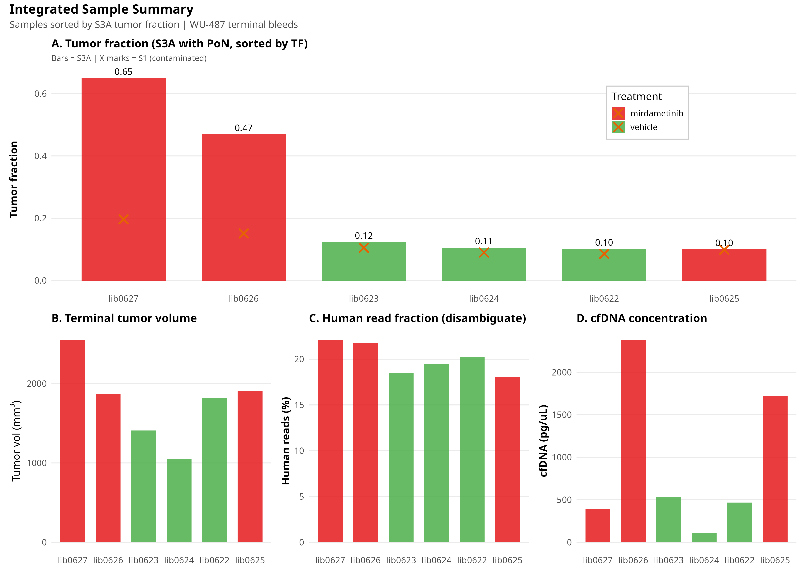
Figure 25: Waterfall summary: samples ranked by S3A tumor fraction with sample covariates.
Samples sorted by S3A tumor fraction reveal a clear bimodal distribution: lib0627 (TF = 0.65) and lib0626 (TF = 0.47) separate cleanly from the four low-TF samples (TF = 0.08-0.12). The X marks show the corresponding S1 estimates, which compress the dynamic range by failing to distinguish high-TF from low-TF samples. Tumor volume, human read fraction, and cfDNA concentration are shown for context. While the two highest-TF samples have the largest tumors, neither cfDNA concentration nor tumor volume alone explains the TF variation, emphasizing the need for computational tumor fraction estimation through CNA-based methods.
10.2. Key findings
- Mouse contamination dominates S1: 67-71% of reads are mouse-origin, and 68.6% of S1 MAPQ >= 20 reads in lib0626 are mouse contamination. Direct alignment to hg38 without species filtering is unsuitable for PDX cfDNA CNA analysis.
- Disambiguation reveals true tumor content: S3A tumor fractions range from 0.05 to 0.65, compared to 0.07-0.38 for S1. The 2 high-TF samples (lib0626, lib0627) show TF increases of 5.8x and 1.7x respectively after disambiguation.
- CNA profiles improve with disambiguation: Genome-wide CNA profiles for high-TF samples show clear gains and losses only after disambiguation. S1 profiles are flat due to signal dilution by mouse contamination.
- PoN improves S1 more than disambiguated strategies: The panel of normals corrects reference-specific artifacts that overlap with contamination effects, providing a larger improvement for S1 (CV 0.33 to 0.11) than for S3A (CV 0.30 to 0.11).
- Fragment length profiles confirm cfDNA after disambiguation: Only high-TF samples show a mono-nucleosomal peak after disambiguation, validating that S3A enriches for true cfDNA.
- Tumor volume alone does not explain TF variation: Despite a 2.4-fold range in tumor volume, the vehicle arm shows uniformly low TF. This suggests that factors beyond bulk tumor size — such as tumor vascularity, necrosis, or treatment-induced apoptosis — contribute to cfDNA shedding. The two high-TF samples are both from the mirdametinib arm; whether MEK inhibition promotes tumor cell death and cfDNA release in WU-487 cannot be determined at n=3 per arm but warrants investigation.
10.3. Production pipeline recommendation
Based on these findings, the production pipeline should use:
- Disambiguate (S3A): Human-only reads with NM-tag comparison
- BISCUIT aligner uniformly for both human and mouse reference alignments
- ichorCNA default-low-input preset with PoN for tumor fraction estimation
- Autosomes only (chrX excluded to avoid sex-chromosome artifacts)
S3B (including ambiguous reads) provides marginally more coverage but dilutes tumor signal; S3A is preferred for CNA analysis where signal purity outweighs depth.
11. Limitations
- Small sample size (n = 6): Statistical power is limited for correlation analyses. The Spearman correlation between tumor volume and TF is not significant, but the biological trend is consistent with expectations.
- Single PDX line: All samples are from WU-487 (Chr8q-WT). Validation on Chr8q-gain lines is needed to confirm that disambiguation correctly identifies this CNA.
- Subsampled data: 50M read-pair subsets may underestimate CNA detection sensitivity at low TF. Production data with full sequencing depth (~380M pairs) may reveal additional signal.
- No deduplication: The 0% duplicate rate in subsampled data is artificial. Production runs will have PCR duplicates that reduce effective coverage.
- EM-seq treated as WGS: BISCUIT alignment handles methylation conversion, but ichorCNA does not account for methylation-driven read depth biases (e.g., methylation-dependent coverage variation at CpG islands).
- Default hg38 PoN: The PoN was built from non-PDX WGS samples and may not fully correct for PDX-specific artifacts. A PDX-specific PoN could further improve accuracy.
- No orthogonal TF validation: Tumor fraction is estimated solely by ichorCNA (CNA-based). Orthogonal measurements such as dPCR for tumor-specific mutations, mutation VAF from targeted sequencing, or LINE-1 species-specific qPCR would strengthen confidence in the TF estimates, particularly for the low-TF samples where ichorCNA operates near its detection limit.
- Implantation time confound: Mirdametinib mice were collected 9 days later than vehicle (day 72 vs day 63 post-implant). Larger terminal tumor volumes in the mirdametinib arm may reflect additional growth time rather than treatment resistance. Longitudinal growth curves should be examined to distinguish these interpretations.
- Fragment enrichment is TF-dependent: Disambiguation enriches the cfDNA nucleosomal peak only in high-TF samples (23-28% of reads in 150-180 bp region for S3A vs 19% for S1). In low-TF samples, S3A actually shows a LOWER peak fraction (3-7%) than S1 (15-17%), because human reads surviving disambiguation are predominantly host genomic DNA rather than tumor cfDNA.